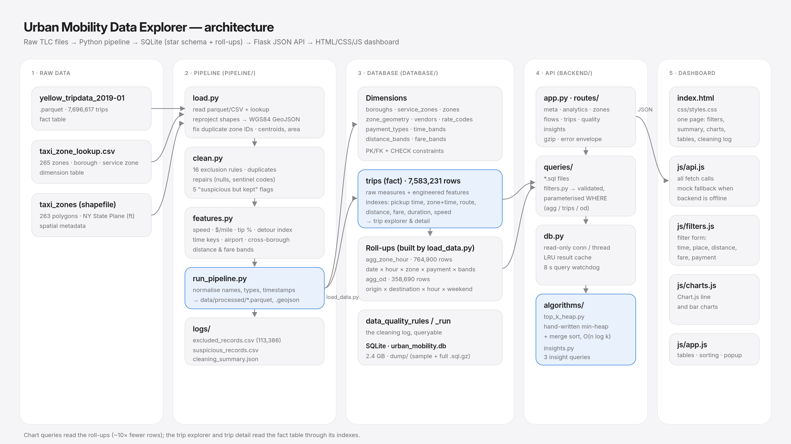

An end-to-end system that cleans 7.7 million NYC yellow-taxi trip records, stores them in a normalised relational database and serves an interactive dashboard for exploring when, where and at what price the city moves.
Team: ____________________________ · Repository: ____________________________ · Video: ____________________________
The task is to turn three raw TLC files into a system that answers questions about urban movement. The files are a trip-level fact table, a zone lookup and a zone shapefile. We used the official yellow_tripdata_2019-01.parquet (January 2019, the month provided by the course) with the matching taxi_zone_lookup.csv and taxi_zones shapefile.
Before writing any cleaning rule we profiled every column (missing values, percentiles, value counts). Each rule in section 2 traces back to one of these observations:
congestion_surcharge is empty for 63% of rows because the NYS surcharge only began on 1 February 2019. airport_fee is entirely empty.The spatial file is in NY State Plane Long Island (US feet), not longitude/latitude, so it has to be reprojected before a browser can draw it.
Cleaning is declarative. pipeline/clean.py defines each rule once, with a code, a description and a vectorised test. A record that fails any exclusion rule is removed and written to pipeline/logs/excluded_records.csv together with every rule it broke (for example DURATION_TOO_SHORT|DISTANCE_ZERO). Rules can overlap, so the counts below add up to more than the 113,386 excluded trips (1.47% of the raw file).
| Rule | Threshold and reasoning | Records |
|---|---|---|
| Duration too short | Under 1 minute: the meter was started or stopped by accident | 67,801 |
| Distance zero | Under 0.01 mi: cancelled or no-trip rides | 55,089 |
| Duration too long | Over 4 h: meter left running (NYC trips beyond this are not plausible door-to-door) | 20,766 |
| Fare below minimum | Under the 2019 flag-drop of $2.50: refunds, voids, disputes | 10,866 |
| Negative component | Any negative extra, tax, tip, toll or surcharge | 7,134 |
| Speed impossible | Over 65 mph average door-to-door, above any NYC limit | 6,584 |
| Time non-positive | Drop-off at or before pickup | 6,557 |
| Time out of period | Pickup not in January 2019 | 537 |
| Invalid rate code | RatecodeID 99, undefined in the data dictionary | 252 |
| Total mismatch | Total differs from the sum of its parts by more than $5 | 158 |
| Invalid vendor | VendorID 5, not in the dictionary | 99 |
| Passengers over capacity | More than 6, the largest legal yellow cab | 57 |
| Fare too high / distance too long | Fare over $500; distance over 100 mi | 34 / 32 |
| Duplicate trip | Same vendor, timestamps, zones, distance and fare as an earlier valid row | 5 |
A rule we changed after inspecting its output. Our first total-consistency rule allowed only $1 of slack and removed 15,675 trips. Looking at those rows, almost every gap was about $2.50: some meters were already charging the congestion surcharge in January but leaving its column blank. These are valid trips, so we raised the exclusion threshold to $5 (158 records) and log the $1–5 cases as "suspicious but kept".
suspicious_records.csv)Pickup or drop-off in zone 264/265 "Unknown / Outside NYC" (168,201); total $1–5 above its components (15,670); tip larger than the fare (4,475); under 2 mph for over 30 minutes (1,119); negotiated fare over $50 for under a mile (423). These records are plausible, but analysts should know they are there. The dashboard's Data quality section shows all three groups, read from the data_quality_rules table.
Every downstream name is snake_case (PULocationID → pu_location_id). Timestamps are stored as one canonical text form, YYYY-MM-DD HH:MM:SS in NYC local time, which sorts chronologically and keeps range filters index-friendly. Money is rounded to cents, and categorical codes are integers with foreign keys into dimension tables.
pipeline/features.py derives four analytical features, each combining several raw columns to answer a question no single column can:
| Feature | Formula | Why it matters |
|---|---|---|
| avg_speed_mph | distance ÷ (dropoff − pickup) | A congestion proxy. Distance and time alone mix up "long trip" with "slow trip"; speed separates them and shows where and when the city jams. |
| fare_per_mile | fare ÷ distance | Price efficiency. The meter charges for both distance and waiting, so $/mile rises with congestion. It exposes the hidden "traffic tax" by hour and zone. |
| tip_pct | tip ÷ fare × 100, card trips only | Rider generosity. Cash tips are never recorded, so including cash trips would drag tips towards 0 (a classic bias in this dataset). Cash trips get NULL. |
| detour_index | distance ÷ straight-line distance between zone centroids | Route circuity. About 1.3 is normal for a street grid; high values reveal geography (rivers, bridges, highway access) that forces long detours. It is undefined for same-zone trips and for centroids under 0.25 mi apart, where rounding noise dominates. |
Supporting keys, cheap to index and used by every filter: pickup_date, pickup_hour, pickup_dow, is_weekend, trip_duration_min, is_airport_trip (JFK, LaGuardia, Newark), is_cross_borough, and categorical distance_band_id and fare_band_id. The bands make range filters answerable from the pre-aggregated tables (section 5).

| Decision | Choice | Trade-off |
|---|---|---|
| Database | SQLite | Zero setup, one file, which makes it easy to reproduce and submit. It has no parallel query execution, so we pre-aggregate (below). PostgreSQL would scale further but adds operational weight that the assignment doesn't need. |
| Keep all 7.6 M trips | No sampling | Sampling would have been faster to build but loses rare routes and zones. Keeping the full month made a roll-up design necessary. |
| Roll-up tables | agg_zone_hour, agg_od | A raw scan of 7.6 M rows takes 1–8 s in SQLite, and the dashboard issues about 12 queries per filter change. The roll-ups make chart queries about 10× smaller (0.2–1.2 s cold, instant from cache). The cost is that route rankings cannot honour date or payment filters, and the API reports this in meta.ignored_filters, which the UI shows as a note. |
| Backend | Flask, SQL in .sql files | Every value is validated and bound as a parameter; only whitelisted column names are interpolated. Connections are read-only, results go through an LRU cache, and a progress-handler watchdog aborts any query running longer than 8 s with HTTP 503 instead of hanging. |
| Frontend | Plain HTML/CSS/JS + Chart.js | Simple to read and maintain, with no build step. Chart.js gives tooltips and responsive charts out of the box. A framework (React, Vue) would add tooling the project doesn't need. |
The schema is a star: the trips fact table, with foreign keys to normalised dimensions (boroughs, service_zones, zones, zone_geometry, vendors, rate_codes, payment_types, time_bands, distance_bands, fare_bands). Zones are in 3NF: borough and service zone are separate tables, not repeated strings. Polygons live in their own table because only the map needs them. CHECK constraints encode the cleaning rules (for example fare_amount >= 2.5 and dropoff_datetime > pickup_datetime), so the database itself refuses invalid data. The loader also runs PRAGMA foreign_key_check and checks that both roll-ups sum to exactly the number of trips.
| Index | Access path |
|---|---|
trips(pickup_datetime) | Date-range filters; default sort in the trip explorer |
trips(pu_location_id, pickup_datetime), (do_location_id, …) | Everything about one zone, already in time order |
trips(pu_location_id, do_location_id) | Route look-ups |
trips(trip_distance), (fare_amount), (trip_duration_min), (avg_speed_mph) | Sortable explorer columns: ORDER BY … LIMIT 25 walks the index instead of sorting millions of rows |
agg_zone_hour PK + (pu_location_id, pickup_date) | Every chart |
A query-planning problem we fixed. With a Manhattan filter, the trip explorer timed out: SQLite drove the query from the zone index, gathered 6.9 M Manhattan trips and then sorted them. Two changes fixed it. First, the 25-row page is now selected from trips alone before the label joins. Second, the API checks the borough's share of trips in the roll-up and, for large boroughs, writes the filter as +pu_location_id IN (…), telling SQLite to walk the sort index instead. Every explorer combination we tested now returns in under 1.7 s.
The dashboard constantly ranks things: the busiest of ~32,000 routes, the slowest of 263 zones, the most circuitous routes. Instead of ORDER BY … LIMIT, the SQL returns unordered aggregates and algorithms/top_k_heap.py selects the K best. It is implemented by hand, with no heapq, sorted() or list.sort().
TOP_K(items, K, score):
H ← empty array-backed min-heap # root = weakest of the current best K
for x in items:
s ← score(x)
if |H| < K: H.push((s, x)); SIFT_UP O(log K)
elif s > H.root.s: H.root ← (s, x); SIFT_DOWN O(log K)
else: discard O(1)
return MERGE_SORT_DESC(H) O(K log K)
Complexity: O(n log K) time and O(K) extra space, against O(n log n) time and O(n) space for a full sort. For n = 32,000 routes and K = 10 that is about 106k comparisons instead of about 480k. Ties are broken by insertion order, so results are deterministic. A self-test compares the output with a reference sort (python algorithms/top_k_heap.py). The API reports "algorithm": "top_k_heap" and the number of candidates in each ranked response.
The dashboard opens with three insights computed live by algorithms/insights.py. They recalculate under any filter, so a reader can check whether a pattern holds for one borough, one week or one hour.
Network speed (total miles ÷ total hours) peaks at 23.0 mph at 5 am and bottoms out at 10.9 mph at 9 am. It stays between 11 and 12.5 mph through the working day and only recovers after 7 pm. Because the meter charges for waiting time, congestion feeds straight into price: fare per mile rises from $3.46 at 5 am to $4.79 at 9 am, a 38% "traffic tax". Weekends move faster (14.3 vs 12.8 mph). Implication: peak-hour pricing and dispatch planning should target the 8 am–7 pm band; the morning ramp is the steepest.
$8.04/mi for trips under 1 mi versus $2.76/mi for trips over 20 mi. The flag drop and slow speeds (7.6 mph) dominate short trips, while long trips run at 29.6 mph. 27% of all trips fall in the shortest band, so most riders pay the premium rate. Short-trip riders also tip the highest share of the fare (24.6% vs 17.2%), partly because tip presets are percentage-based while the fares are small. Implication: short Manhattan hops are where micromobility (bikes, scooters) competes most directly with taxis.
Each JFK, LaGuardia or Newark pickup earns about 3.2× an average ride, and 6.4% of all trips touch an airport. LaGuardia alone has 182,203 pickups at 21.3 mph average, far faster than Midtown. Implication: airport queues are economically rational for drivers despite the wait, which explains the long taxi lines at JFK and LGA.
The dashboard is deliberately simple: one page built with plain HTML, CSS and JavaScript, using Chart.js for the charts. All network calls live in js/api.js, the filter form in js/filters.js, chart drawing in js/charts.js and page logic in js/app.js. If the backend is not running, the page falls back to recorded sample responses (mock/sample_responses.json).
Why these charts. Trips per day shows the month's rhythm: weekend dips, New Year's Day and Martin Luther King Jr. Day. Average trips per hour (divided by the number of days, so filters stay comparable) shows the daily demand curve. Average speed by hour is a separate chart rather than a second axis on the demand chart, and makes the rush-hour slowdown visible. Fare per mile by distance shows the short-trip premium. Location is covered by ranked tables of zones and routes rather than a map, which keeps the interface simple and the numbers exact.
Technical challenges. (1) Query latency on 7.6 M rows in SQLite, solved with banded roll-ups, careful indexing and plan control. (2) Silent data defects: the mislabelled shapefile IDs, and the unlisted congestion surcharge, which our first rule would have wrongly discarded. (3) Keeping filters honest across tables with different granularity, solved with the ignored_filters contract.
What we would do next.
/api/zones/geojson), and tests that pin each cleaning rule to fixture records.Reproduce: pip install -r requirements.txt → python pipeline/run_pipeline.py (≈1 min) → python database/load_data.py --dump (≈7 min) → python backend/app.py → open http://127.0.0.1:5000. Data: NYC Taxi & Limousine Commission, Yellow Taxi Trip Records (January 2019) and Taxi Zone shapefile.